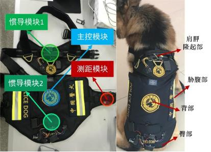
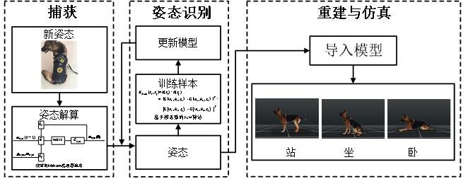
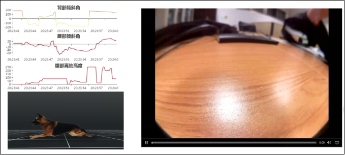

Ruiqian Han
I am a senior major in Computer Science at Hohai University, Nanjing, where I study on Machine Learning, Computer Vision, Robotics, etc. I am also a member of BlackAnt Lab. I have received an offer for the Mphil program of The Hong Kong University of Science and Technology (Guangzhou).
News
Recent Projects
Actually, dogs have been playing important roles in many fields, like security, rescue, etc. But the interactions between dogs and tasks fully depend on human, which limits the abilities dogs can perform, so I take part in a research on “how to make dogs act like robots with their better athletics”, aiming to design a wearing equipment for dogs to achieve the recognition of their status while in missions and figure out a way to transmit instructions, which can make the dog as a functional robot, then build a system which can send instructions to dogs and estimate the completion of tasks, which we call it “Dog-Computer Interaction”.
 With the support from the Nanjing Police Dog Research Institute of the Ministry of Public Security, we analysed the demands for the features a nice wearing equipment for police dogs, and designed a smart vest carrying IMUs and camera and other modules to collect the data of dog’s actions and reconstruct them to make it perceptible for people remotely.
Controlling the dogs remotely is essential for making them play a role like robots, I take part in a research on a new type of interaction between dogs and the mission system. Considering the demands in some situations such as quiet, quickly, we try to use different kinds of vibrations to represent different instructions, and train dogs to get used to this kind of interaction.
The KKSwarm project aims to build an efficient and easy-to-use cluster research platform for researchers. Combined with the powerful open source ecosystem of ROS, it allows researchers or engineers to quickly get started with development. It also takes into account the span between theoretical research and engineering implementation. By building a lightweight simulation environment and then making the simulation consistent with the real environment through parameter fitting, the KKSwarm project makes the simulation environment highly compatible with the real environment, allowing direct transition of algorithms such as multi-intelligent bodies, and with a low-cost robot cluster, the algorithms can be quickly validated in the physical environment for engineering implementation purpose.
KKSwarmFor the butterfly recognition task, relying on the concise and efficient MindSpore framework, we propose the Attention Mechanism-based Butterfly Recognition Model (Attention-ResNet50) and its MindSpore implementation. We implement the ResNet50 and Alexnet models in the butterfly dataset through MindSpore, and select the better-performing ResNet50 model as the basic model. Based on the ResNet50 model, we adopt the attention mechanism, add a distraction module, and embed it in the basic model. The model is implemented using the MindSpore open source framework, and MindInsight is used for training visualization. The experimental results show that this method performs well in the task of butterfly recognition. The Top1-Acc index of Attention-ResNet50 is 0.21 higher than that of AlexNet and 0.15 higher than that of ResNet50; the Top5-Acc index of Attention-ResNet50 is 0.04 higher than that of AlexNet and 0.12 higher than that of ResNet5